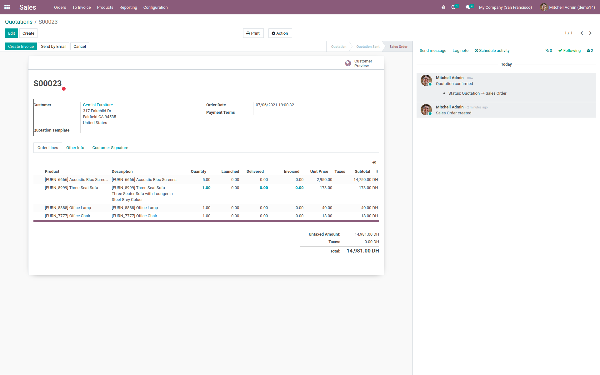
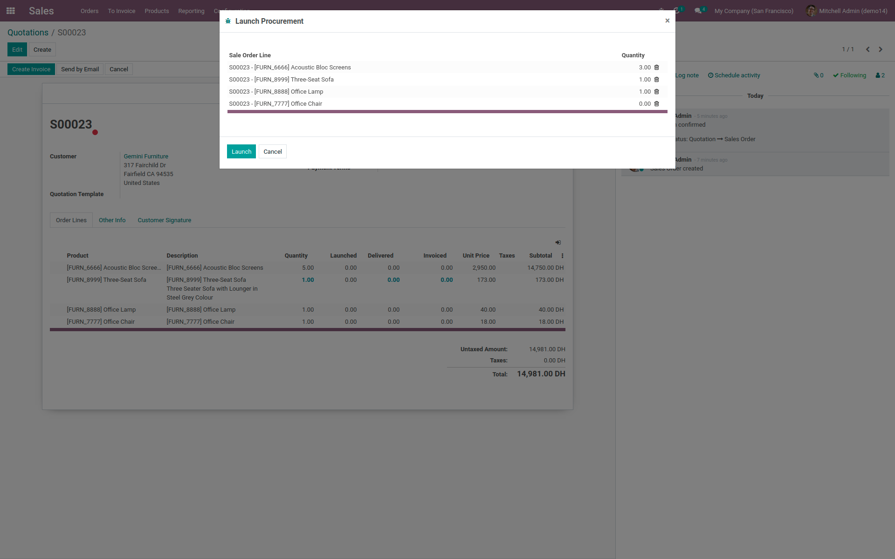
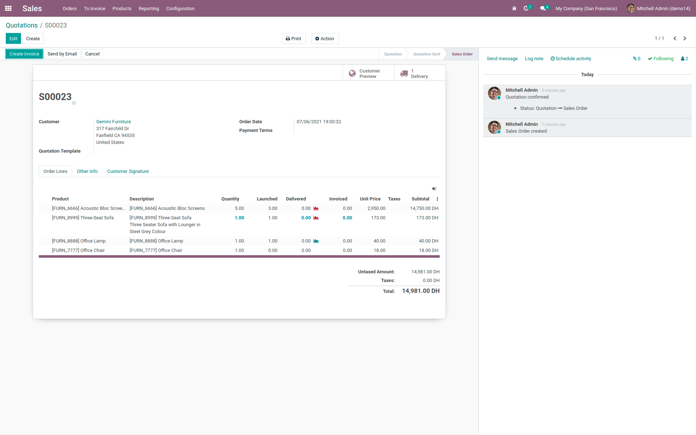

<section class="oe_container">
    <div class="oe_spaced">
        <h2 class="oe_slogan" style="color: #875a7b;">Manually launch products from sale orders</h2>
        <h3 class="oe_slogan oe_mb32" style="text-align: center;">Choose what order lines to launch in procurement/delivery and track/relaunch
            modified quantities.</h3>
        <h4>Usage</h4>
        <p>Upon confirmation the sale order no longer creates a picking or launch procurement rules. instead, a wizard is added to specify which
            products and which quantities to launch first.</p>
        <div class="oe_row_img oe_pic_ctr oe_mt32"></div>
        <p>You can choose from the wizard which lines/quanities to launch.</p>
        <div class="oe_row_img oe_pic_ctr oe_mt32"></div>
        <p>The system tracks which quantities were launched. Moreover if a picking was mistakenly cancelled, you can still launch it again with the
            wizard.</p>
        <div class="oe_row_img oe_pic_ctr oe_mt32"></div>
        <h4>Roadmap/Known issues</h4>
        <ul>
            <li>Support for kits</li>
        </ul>
    </div>
</section>